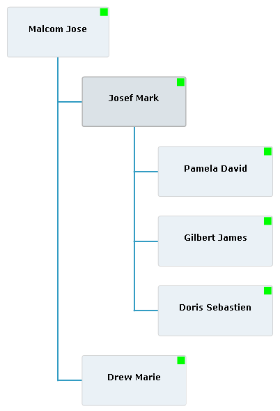

The purpose of the local view mode is to display the
local hierarchy of a specific item known as the local item. This facilitates
navigation through large datasets. The following items are displayed:
The local item.
The siblings of the local item if the
showSiblings property is set to
true (default value).
At most
n levels of local item parents (by default 1) where
n is specified by the
upperLevelLimit property.
At most
m levels of local item children (by default 1) where
m is specified by the
lowerLevelLimit property.
By default the local item is the root of the hierarchy.
The local item can be changed by highlighting the item
and clicking the icon or by pressing the Enter key.
If the default item renderers are used, the local item
is visually identified by a thicker border and darker color.
The following figure displays the same
dataProvider as given in
Global view mode, but in local view mode. The local item is
Josef Mark and the upper and lower limits are set to 1.

Note
In local view mode, expand and collapse of a node are
not available because the OrgChart component computes which nodes are open from the specific properties
of this mode.